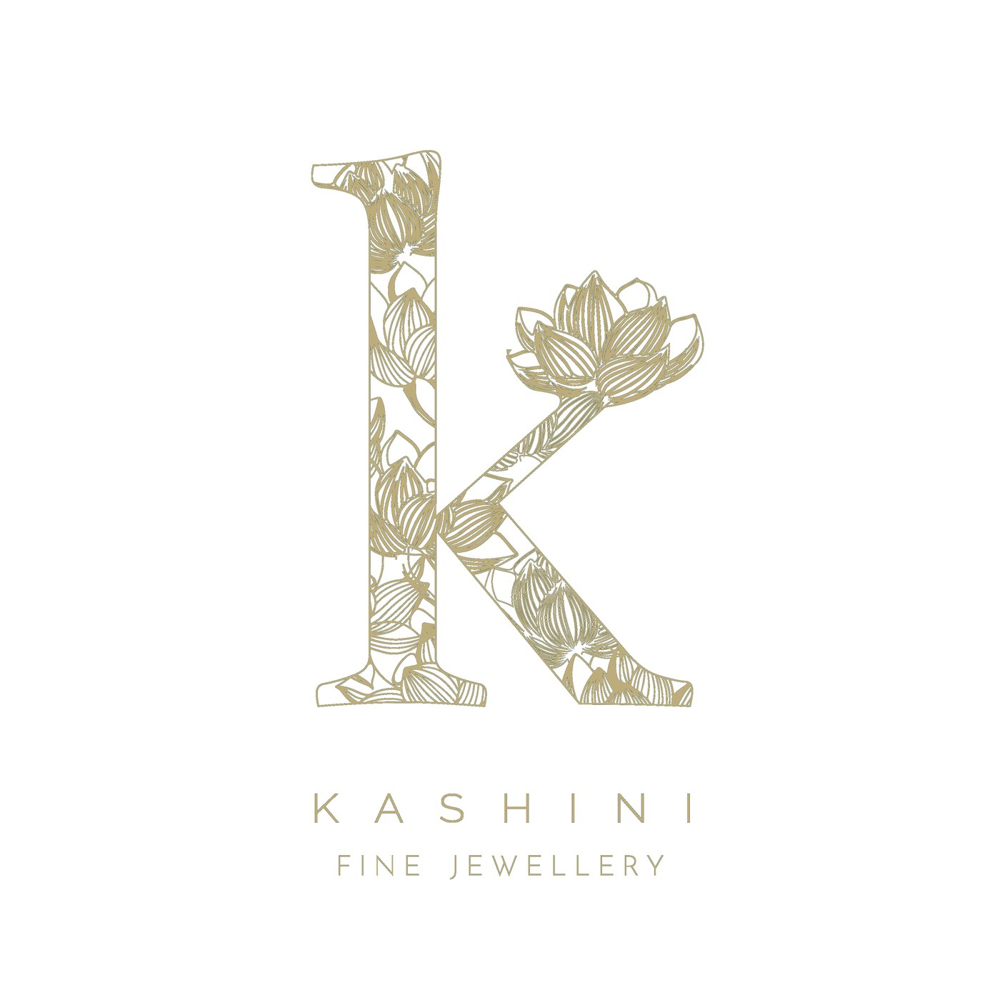
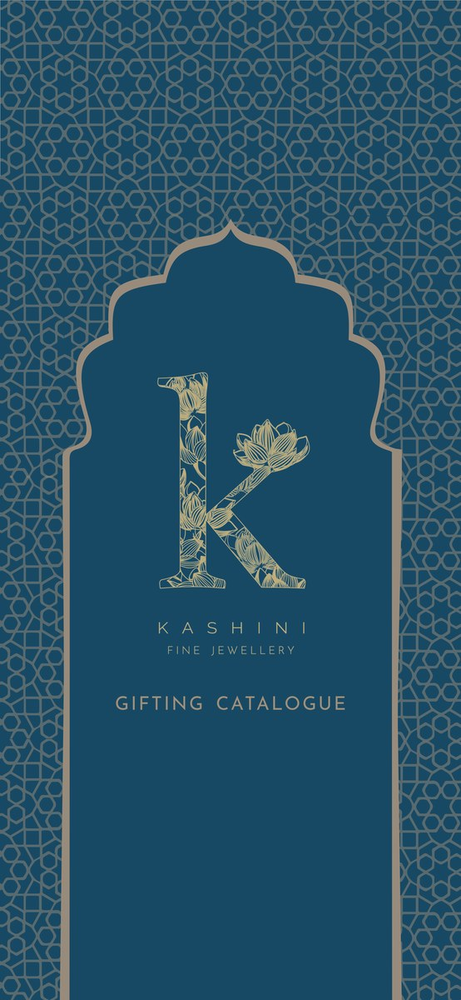
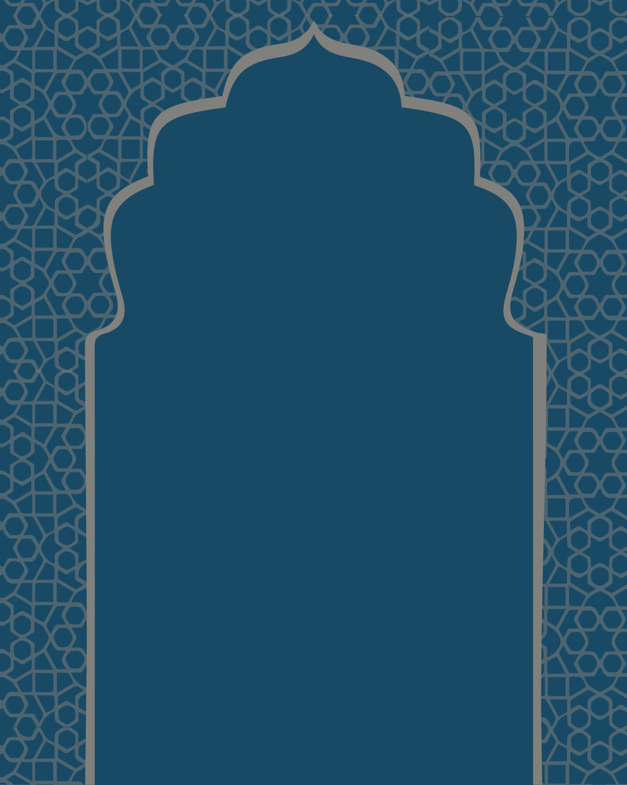
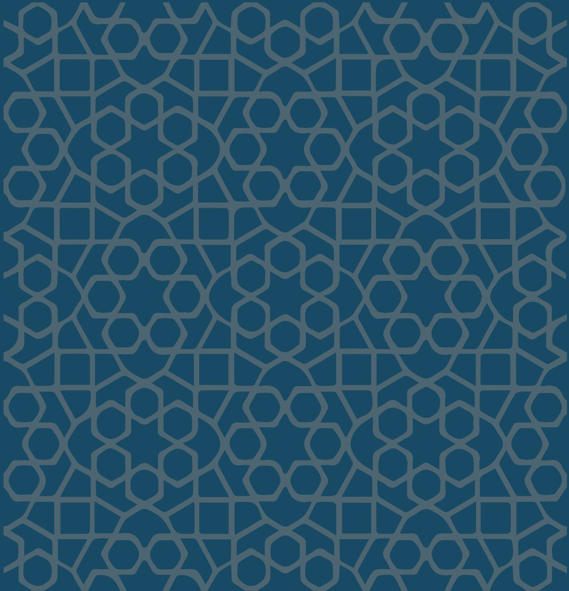
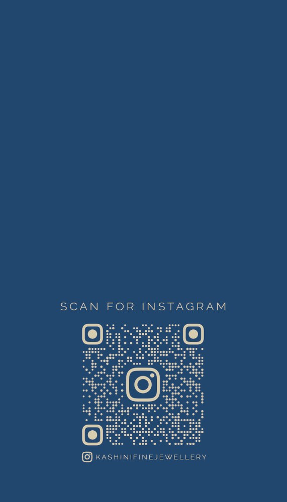

Brand identity and a live boutique for a fine-jewellery house — built around a single mark: a lotus-filled "k." From the logo it extends to a cusped Mughal arch, a jali lattice, a navy-and-gold palette, a gifting catalogue, and a cinematic online store. The identity and the website are mine; the jewellery is the house's own.
Kashini is a fine-jewellery house. The brief was a complete visual identity and a place to sell from. The work begins with a single lettermark — a lowercase "k" whose counters are filled with a fine line-drawn lotus — and extends that one idea, in navy and gold, across every surface the brand touches.
The jewellery itself belongs to the house; the identity, the collateral and the website are the design here.





A letter and a flower, drawn as one.
The lettermark sets a lotus inside the "k" — the flower's petals become the texture of the letter, so the symbol of the house and its initial are a single drawing. Two architectural motifs carry the rest: a cusped Mughal arch, used to frame, and a jali lattice, used as a ground.
The identity comes to life online at kashini.pages.dev — a cinematic homepage where petals fall past the arched mark, a boutique with the full range, and a cart-and-enquiry checkout that routes orders gracefully. The same navy-and-gold language runs from the catalogue to the screen.